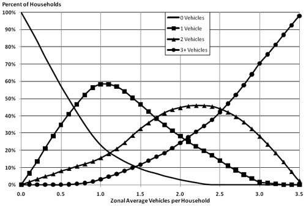

Model Validation and Reasonableness Checking/Socioeconomic Models
# Socioeconomic Models
As discussed in Model Inputs, the main inputs to travel demand models are transportation network data and socioeconomic data. The socioeconomic data generally include employment by type and households classified by variables, such as numbers of persons, numbers of workers, income level, and/or numbers of vehicles. In aggregate models, these data are required to be identified for specific geographic subregions, typically TAZs, but in some models, may be required at a very disaggregate level such as parcels.
In traditional trip-based travel models, socioeconomic models have frequently been incorporated in the trip generation step. Socioeconomic input data have typically included variables, such as numbers of households, population, or average household size, median income, and numbers of vehicles or average vehicles per household for each TAZ. The socioeconomic models have then allocated the input variables to the one-, two-, or three-dimensional cross-classification strata required for application of trip generation models for each TAZ in the modeled region. An example of the socioeconomic stratification is number of households by income group and household size.
Disaggregate models applied to each individual or household require synthetic populations as input data. These are usually generated by programs that are part of the model system (which may also require control totals of households or persons for specific geographic subregions as inputs).
Validation of models that generate socioeconomic data inputs is discussed in Validating Socioeconomic Models. Validation of models that synthetically generate populations is discussed in Synthetic Population Generation.
# Validating Socioeconomic Models
Socioeconomic models may or may not consider the level of transportation service, or accessibility. There are two major ways in which accessibility may be considered:
- The locations on residential and commercial development are affected by accessibility to the transportation system. These effects are not directly modeled by a transportation model alone; an integrated transportation-land use model is required. Validation of these types of integrated models is not covered in this manual.
- Decisions on vehicle ownership/availability may be affected by the accessibility of the highway system as well as the transit system and the quality of service for nonmotorized (walk and bicycle) modes. These effects may be analyzed within the travel modeling process through the use of socioeconomic models, such as vehicle availability models.
While the use of accessibility-based socioeconomic models has been increasing, some travel demand models may also make use of socioeconomic models that do not consider transportation level of service. This may be done when the necessary inputs for trip production models, such as households cross-classified by specific variables, are not directly forecast. Examples of such models include models that classify households by the number of persons, workers, or children living in the households.
The best state of the practice for socioeconomic models is the use of a discrete choice formulation, usually a multinomial or ordered response logit model, to simulate the “choice” of the number of vehicles (or workers, children, etc.). This type of model can be readily estimated using data from a household activity/travel survey. However, the application of such a model often requires that some of the input variables also be disaggregated. For example, a vehicle availability model may include input variables representing the number of workers and number of persons in the household. If these variables are not forecast in a manner that actually classifies households by level – for example, if the total number of households and total population in each zone is forecast, but not the number of households with one person, two persons, etc. – then some of the inputs for the application of the vehicle availability model are not directly available and may need to be estimated using aggregate share socioeconomic models.
Aggregate share socioeconomic models are used to classify households. The percentages of households in each category are estimated as a function of an average, usually at the zone level. For example, the numbers of households with zero vehicles, one vehicle, two vehicles, etc., are estimated from the average number of vehicles per household in the zone. These models are usually estimated from census data, with curves “smoothed” to produce reasonable results.
Figure 4.1 shows an example of an aggregate share vehicle availability model. This model is applied by reading the shares of each vehicle availability level associated with the average number of vehicles per household, shown along the horizontal axis. For example, if a zone has an average of 1.5 vehicles per household, the model estimates that approximately 9 percent of households own zero vehicles, 47 percent own one vehicle, 32 percent own two vehicles, and 12 percent own three or more vehicles. Note that the curves are estimated so that the sum of the percentages across all vehicle availability levels is 100 percent for each input zonal average vehicles per household.
The discussion of model validation checks for socioeconomic models in this chapter is presented in terms of vehicle availability models. The results can be interpreted similarly for other types of socioeconomic models. For example, the aggregate checks of the numbers of households with zero vehicles, one vehicles, two vehicles, etc., within a subregion could be conducted and interpreted similarly for a model of the numbers of workers (households with zero workers, one worker, two workers, etc.), numbers of households by household size, or numbers of households by income group.

# 4.1.1 Sources of Data
The main sources of data for validation include the following:
- Household travel/activity survey – If such a survey is available, it is likely to have been the data source for a choice-based socioeconomic model estimation. It is the best source for information on local household characteristics. It can be expanded to represent the total population and households in a region and can be disaggregated to represent various population segments.
- Census data – The decennial U.S. Census provides information on the full set of persons and households in the country and can be summarized at a fine level of geographic resolution, such as the zone level or below. The Census Transportation Planning Package (CTPP), until 2000 based on the “long form” of the census, includes information on a number of cross-classifications of households at the zone level, defined by the MPO or other planning agency. Since the long form was eliminated after the 2000 Census, the Census Bureau has developed the American Community Survey (ACS), which is conducted continuously, not only at the time of the decennial census, and will provide the information formerly provided by the long form.
- National sources – Besides the census, relevant national data sources may include the National Household Travel Survey (NHTS) and NCHRP Report 365, Travel Estimation Techniques for Urban Planning, which is being updated (the update is expected to be available in 2010).
# 4.1.2 Aggregate Checks
The initial checks of aggregate share models are to ensure that the models are internally consistent. For the model shown in Figure 4.1, the sums of the percentages of households by vehicle ownership levels must be 100 percent for each input zonal average vehicles per household. In addition, the internal consistency checks should ensure that the implied output share matches the input share. For the example vehicle share model, the implied average number of vehicles per household resulting from the shares of households by vehicle ownership level for an input zonal average of 1.5 vehicles per household is:
Average Vehicles/Household = (0 * 0.06) + (1 * 0.53) + (2 * 0.32) + (3.67 * 0.09) = 1.5
The value used for three or more vehicles in the above check should be reasonable. For example, if the regional average number of vehicles per household for households with three or more vehicles summarized from census data was 3.2, the 3.67 average used above might not be reasonable.
Subsequent to the internal consistency checks, the main aggregate checks of socioeconomic models are comparisons of aggregate model results – for example, the percentage of households by number of vehicles by various market segments – to observed data from the U.S. Census or local household survey. Market segments may be defined by demographic or geographic characteristics, or any other variables by which model results and the comparison data sources are reported. Generally, the census is a good independent data source for validation if the model has been estimated from household survey data.
If a model has been estimated using local household survey data, the model results may be compared to the summaries from the expanded household survey data. Such a comparison can help identify errors in the model estimation and errors in the survey expansion (or differences to be checked between the household characteristics during the survey period compared to the model base year). However, any problems with the survey data set itself, other than in the expansion process, might not be identified since they would exist in both the survey data and the models estimated from the data. It is therefore a good idea to check the model results against census data as well.
Table 4.1 shows an example of an aggregate check of a vehicle availability model. The percentage of vehicles by category and the average number of vehicles per household by county are compared to the observed census data. Some potential model issues can be noted from this comparison. Overall, vehicle ownership is overestimated by about 10 percent, in large part because zero-vehicle households are underestimated by about one third. The overestimation of vehicle ownership is most pronounced in Zeppo County, where the underestimation is about 20 percent. These findings would help the modeler identify how the model might be revised to improve the comparison. (Troubleshooting strategies are discussed in Troubleshooting Strategies for Socioeconomic Models.)
Table 4.1 Vehicle Availability Model Results Compared to Observations at County Level
| Variable | Moe | Larry | Curly | Groucho | Chico | Harpo | Zeppo | Region |
|---|
Percent 0 Vehicles Observed | 5% | 13% | 12% | 7% | 12% | 7% | 37% | 17% Model | 3% | 8% | 8% | 3% | 5% | 4% | 24% | 11% Percent 1 Vehicle Observed | 28% | 35% | 35% | 31% | 34% | 33% | 42% | 35% Model | 27% | 38% | 38% | 30% | 34% | 33% | 49% | 37% Percent 2 Vehicles Observed | 44% | 37% | 38% | 44% | 38% | 43% | 18% | 34% Model | 47% | 39% | 39% | 45% | 43% | 43% | 21% | 36% Percent 3 Vehicles Observed | 22% | 14% | 15% | 18% | 16% | 17% | 3% | 13% Model | 22% | 15% | 15% | 21% | 18% | 20% | 5% | 15% Average Number of Vehicles Observed | 1.86 | 1.55 | 1.57 | 1.78 | 1.58 | 1.74 | 0.88 | 1.44 Model | 1.95 | 1.65 | 1.65 | 1.90 | 1.79 | 1.82 | 1.11 | 1.59
Note that the type of check shown in Table 4.1 can be performed regardless of whether the socioeconomic model is an aggregate share model or a disaggregately estimated logit model.
Another type of validation check, appropriate for validation of an aggregate share model, is shown in Table 4.2. This table shows a comparison between the observed number of households in each vehicle availability category and the number obtained by applying the model using the average vehicles per household for each zone. For example, there are 4,757 households in zones with an average number of vehicles per household of 1.95 to 2.05. From the census data, the numbers of households in these zones owning zero, one, two, and three or more vehicles, respectively, are 605, 1,554, 1,013, and 1,585. Applying the aggregate share model and summing the results over the region yields respective estimates of 590, 1,332, 1,146, and 1,689.
</center> | <center>
**1 Vehicle**
</center> | <center>
**2 Vehicles**
</center> | <center>
**3+ Vehicles**
</center> | <center>
**Total**
</center> |
| |
Obs.
</center> | <center>
**Model**
</center> | <center>
**Obs.**
</center> | <center>
**Model**
</center> | <center>
**Obs.**
</center> |
| 0.00–0.05 | 181 | 181 | 0 | 0 | 0 | | 0.05–0.15 | 0 | 0 | 0 | 0 | 0 | | 0.15–0.25 | 0 | 0 | 0 | 0 | 0 | | 0.25–0.35 | 308 | 293 | 28 | 33 | 5 | | 0.35–0.45 | 29 | 35 | 17 | 7 | 0 | | 0.45–0.55 | 382 | 391 | 115 | 119 | 38 | | 0.55–0.65 | 1,531 | 1,452 | 515 | 622 | 183 | | 0.65–0.75 | 987 | 912 | 425 | 512 | 114 | | 0.75–0.85 | 1,656 | 1,749 | 1,211 | 1,232 | 472 | | 0.85–0.95 | 1,208 | 1,187 | 938 | 991 | 313 | | 0.95–1.05 | 1,126 | 1,259 | 1,263 | 1,207 | 555 | | 1.05–1.15 | 1,178 | 1,185 | 1,211 | 1,280 | 600 | | 1.15–1.25 | 2,714 | 2,569 | 2,981 | 3,074 | 1,279 | | 1.25–1.35 | 1,373 | 1,346 | 1,562 | 1,710 | 1,028 | | 1.35–1.45 | 1,962 | 1,908 | 2,570 | 2,648 | 1,534 | | 1.45–1.55 | 2,948 | 2,886 | 4,465 | 4,405 | 2,367 | | 1.55–1.65 | 2,431 | 2,469 | 4,172 | 4,124 | 2,486 | | 1.65–1.75 | 2,362 | 2,316 | 4,251 | 4,221 | 2,664 | | 1.75–1.85 | 1,506 | 1,425 | 2,871 | 2,832 | 2,030 | | 1.85–1.95 | 659 | 708 | 1,722 | 1,518 | 1,102 | | 1.95–2.05 | 605 | 590 | 1,554 | 1,332 | 1,013 | | 2.05–2.15 | 242 | 201 | 622 | 478 | 289 | | 2.15–2.25 | 188 | 172 | 492 | 420 | 439 | | 2.25–2.35 | 58 | 19 | 22 | 52 | 45 | | 2.35–2.45 | 0 | 0 | 0 | 0 | 0 | | 2.45–2.55 | 17 | 14 | 83 | 42 | 64 | | 2.55–2.65 | 0 | 9 | 56 | 25 | 42 | | 2.65–2.75 | 6 | 2 | 12 | 6 | 8 | | 2.75–2.85 | 0 | 0 | 0 | 0 | 0 | | 2.85–2.95 | 28 | 6 | 47 | 22 | 49 | | 2.95 or more | 143 | 10 | 178 | 31 | 87 | | Total | 25,828 | 25,296 | 33,383 | 32,940 | 18,806 |
Probably the most significant discrepancies between the model results and the observed data in this example occur near the bottom of the table. In the last two rows, for zones with average vehicle availability of 2.85 or higher, the model appears to be significantly overestimating the number of households owning three or more vehicles and underestimating the number of zero and one vehicle households. However, if one computes the observed and modeled vehicles per household for these two categories (assuming 3.5 vehicles per household for the 3+ category), the results are:
- 2.85-2.95: Modeled – 2.94, Observed – 2.17; and
- 2.95 or more: Modeled – 3.07, Observed – 1.43.
It is obvious that there are errors in the observed data since the average number of vehicles per household is not close to being within the range for each row. In this case, the observed data needs to be checked and corrected, and the comparison redone.
# 4.1.3 Disaggregate Checks
For disaggregately estimated socioeconomic models such as logit models, disaggregate validation should be performed in addition to the aggregate checks described in Aggregate Checks. The logit models are estimated with each record in the estimation data set representing a household in the survey data set. There are no applicable disaggregate checks for aggregate share models.
Ideally, disaggregate validation of a model should be performed using a data set that is independent of the data set used for model estimation. Usually, household activity/travel surveys have such small sample sizes that the entire data set is needed for model estimation. Another disaggregate data set available for validation is the U.S. Census Public Use Microdata Sample (PUMS), which also has one record per household. However, the PUMS data do not include geographic resolution below the Public Use Microdata Area (PUMA). PUMAs contain about 100,000 persons and are therefore insufficient for validation of such variables as accessibility, population density, or area type, which are specified at a fairly disaggregate geographic level, such as the zone level.
Limited disaggregate validation can be performed using the same data set used for model estimation, but reporting the results by market segment. Logit model estimation software has the capability to apply the estimated model to a data set that is in the same format as the estimation data set – and therefore to the estimation data set itself. Naturally, the aggregate results of such an application are likely to yield results very similar to the observed choices, but reporting the results by market segment could reveal some potential biases in the model and corresponding areas for improvement. For example, a logit vehicle availability model could be applied to the data set used for estimation, but the results may be reported by income level. It might be found, for example, that zero vehicle households are underestimated in the model for households with higher income levels.
Table 4.3 presents an example of a disaggregate validation check of a vehicle availability model. The results are reported by income level of the household (low, medium, or high) as reported in the model estimation data set. The “observed vehicles” rows refer to the observed number of vehicles in the estimation data set while “modeled vehicles” refer to the results of the application of the model to the estimation data set. The cells where the model results differ from the observed data by more than one standard deviation are shown in bold italics.
</center> | <center>
**All Households**
</center> |
| |
Low
</center> | <center>
**Medium**
</center> |
|
0 Vehicles
This type of check could be repeated using segmentation schemes other than income (for example, by geographic subarea or number of workers) to further assist in identifying how the model could be improved.
# 4.1.4 Criteria Guidelines
There are no specific criteria guidelines associated with the checks in Sections Aggregate Checks and Disaggregate Checks. Generally, these are checks of “closeness” between modeled and observed results, and obviously the desire is to have the modeled results be as close as possible to the observed results. Because of differences in the segmentation definitions and in error levels in the observed data, it is impossible to define how close is “close enough.” While criteria guidelines are not specified, the validation of socioeconomic models should not be taken lightly since the results impact subsequent models and error may propagate throughout the modeling process.
# 4.1.5 Reasonableness and Sensitivity Testing
The reasonableness checks for socioeconomic models are mainly the aggregate checks presented in Aggregate Checks.
Sensitivity testing for socioeconomic models may be performed by varying input data and rerunning the models. For example, the percentages of households by income level that are inputs to a vehicle availability model could be revised, and the resulting shares of households by number of vehicles and the average vehicles per household could be compared to the base scenario. Likewise, some vehicle availability models use accessibility to transit as an input variable. For example, as transit accessibility increases, vehicle availability (ownership) decreases. While this might make sense in representing areas with transit oriented development, it would be interesting to note the regional impact of changing all transit accessibility.
Another possible sensitivity test is to use the model to backcast vehicle availability for a past year. Using a decennial census year will likely provide the necessary observed data for comparison and perhaps the necessary cross-classification of households for input data, but other data for the backcast year might be needed as well. For example, if the model has network-based accessibility variables, network data for the backcast year would be needed.
# Troubleshooting Strategies for Socioeconomic Models
Table 4.4 shows some of the typical issues that might be found from tests of socioeconomic models.
</center> |
| 1. Expanded survey data set for estimation and validation is significantly different from independent data sources (e.g., census) | - Check survey expansion factors for consistency with data used for expansion (e.g., census)
- Check for differences in socioeconomic data between survey and base years
- Determine which data set is likely to be more accurate as a validation data source |
| 2. Overall aggregate results different from observed data | - Recheck observed data for processing errors
- Perform checks for market segments and disaggregate validation as applicable
- If checks have been done for market segments and appropriate actions taken, consider adjusting constant terms or aggregate shares, depending on model type |
| 3. Results for market segments different from observed data | - Recheck observed data for processing errors
- If there is no input variable related to the segmentation variable, consider adding such a variable to the model
- Consider revisions to model parameters related to the market segment (e.g., income coefficient for income segmentation) |
# 4.1.7 Forecasting Checks
The forecast year validation checks for socioeconomic models should concentrate on comparisons of the forecast year model results to the base year model results. The base year observed data are no longer directly considered. Unlike the base year comparisons, however, the objective is not to achieve a close match between the forecast and base year results, but rather to ensure that the differences and trends are reasonable. For example, it may be reasonable to expect that vehicle ownership increases somewhat over time, especially if real income is forecasted to increase or growth is concentrated in areas without good transit service.
The main comparisons are similar to those described previously between base year model results and observed data. The comparisons should include both regional and subregional checks. Examples of checks include:
- Numbers of households/persons;
- Average household size;
- Percents of households by number of persons;
- Percents of households by income level;
- Percents of households by number of workers;
- Percents of households by vehicles available;
- Number of employees by employment type;
- Percents of employees by employment type; and
- Regional population/employment ratio.
Particular attention should be paid to those variables and distributions that are used in subsequent travel modeling steps.
Forecast year checks are valuable in finding model issues that may not be evident from checks of base year results compared to observed data. An obvious example is that some problems with socioeconomic forecasts themselves are more easily discovered through checks of model results for a forecast year scenario, compared to the base year. For example, vehicle availability model results may make evident unreasonable differences between the base and forecast years in the socioeconomic data inputs to this model. Another example is an inappropriate level of sensitivity to a model input variable that does not vary substantially in the base year. For example, if the model is too sensitive to income level, and the real income grows significantly between the base and forecast year, the vehicle availability results for the forecast year would likely be unreasonable.
# 4.2 Synthetic Population Generation
This section deals with validating the results of population synthesis programs, which are used in disaggregately applied models. These programs are referred to as population synthesizers or synthetic population generators. The output of such a program for the base or forecast year is a synthetic population matching available estimates of the modeled region’s population, classified by residential location and by household and person characteristics. The output file contains a record for each individual identifying his/her characteristics and those of the household of which the individual is part. Population synthesis is often done using some form of iterative proportional fitting (IPF), matching marginal totals of population/household characteristics. These marginal totals need not be one-dimensional if observed cross-classifications of variables are available.
Person characteristics often used in population synthesizers can include:
- Age;
- Gender;
- Worker status (e.g., full-time, part-time, nonworker);
- Student status (e.g., university/college, secondary school, elementary school, pre-kindergarten, nonstudent); and
- Driver’s license status (yes/no).
Each person in the modeled region is simulated as part of a household with one or more persons (or, in some cases, as part of a group quarters living arrangement). Other household-level variables can be derived from the person characteristics, including:
- Number of persons in household;
- Number of workers in household;
- Number of children in household; and
- Number of older people (e.g., age 65 or over) in household.
Certain household characteristics, such as household income, may be used as control totals for the population synthesis program and be assigned to all household members. Other household characteristics, such as the number of vehicles, may be modeled by a socioeconomic model of the type described in Socioeconomic Models after application of the population synthesizer.
The main inputs to a population synthesizer include control totals for the marginals for various household/person characteristics and a seed distribution of the person and household characteristics for the base year or similar period.
# 4.2.1 Sources of Data
There are three major data sources that may be relevant to the validation of population synthesizers:
- '''Control totals for classification variables – '''The best source for control totals for most person and household variables is the U.S. Census, which provides totals for a wide variety of variables at a very fine level of geographic resolution. Relevant census products include summary files, particularly SF1 and SF3 and the Census Transportation Planning Package (CTPP). The CTPP is now derived from the continuously collected American Community Survey (ACS) rather than the long form of the decennial census.
- '''U.S. Census PUMS data – '''The PUMS data contain one record per person for each household completing a Census “long form.” The PUMS data also include one record for each household with the person data being linked to each household. The PUMS data can be used to provide seed distributions for the population synthesizer albeit at fairly coarse geographic levels of resolution.
- '''Household activity/travel survey – '''The household survey that is used for the estimation of the various resident person travel model components also provides individual records for persons and households. Household surveys have more precise geographic information but represent a much smaller sample of the population than PUMS.
Census data are often used to provide seed data for the population synthesizer and control totals for the marginal distributions of various person and household characteristics. Thus, validation against Census data can be viewed as validating against the data used for model “calibration.” However, such validations are useful especially when they are produced for geographic definitions or for variables other than those used to control the population synthesizer.
Household activity/travel survey data are typically expanded to match regional distributions based on Census data for certain characteristics, such as household size, income group, and vehicle ownership. The expansion factors may also include coarse geographic adjustments. Due to the relatively small sample sizes for most household surveys, the person and household characteristics should probably be considered only at a regional or gross subregional level (e.g., area type). In addition, household surveys are subject to nonresponse bias that may affect distributions of characteristics not considered in the expansion factoring (e.g., age distributions of the population). Nevertheless, the expanded data may provide additional estimates of observed distributions of household and person characteristics for a region.
# 4.2.2 Aggregate Checks
The main validation data source is likely to be census data for the base year. Detailed summaries and cross-classifications are available at fine levels of geographic resolution, such as the zone, tract, or block group for many variables of interest. If the model’s base year is not close to a census year; however, summaries may have to be generated as percentages of the population and households for the census year and applied to the total population and households in the base year. This must be done with caution, as the magnitudes of errors resulting from differences between the census and model base year populations will be unknown. The more disaggregate the checks, the larger these errors will be.
Since census data are available at such fine levels of resolution, the choice of geographic resolution levels for validation can depend on whether meaningful conclusions about the match between the synthetic population and the census data can be drawn, given measures of variation in the population. For example, if the percentage of households with a particular characteristic is 40 percent for a zone, and the standard deviation is 50 percent, it is highly probable that the synthetic population will statistically “match” the observed population in this characteristic regardless of the quality of the population synthesizer. However, examining the results for the same characteristic at a coarser geographic level might produce a more meaningful check.
Aggregate validation checks for population synthesizers can be defined as the comparison of marginal or joint distributions of estimated person or household characteristics at various geographic levels. While comparisons to census data may be made at the zone, tract, or block group levels, coarser levels of geographic resolution might be desired to avoid being overwhelmed with numbers. Examples of typical population and household characteristics that can be checked include:
- Number of households/persons;
- Percentages of households by income level;
- Percentages of households by number of persons;
- Percentages of households by number of workers;
- Percentages of households by number of children;
- Percentages of persons by age group;
- Percentages of persons by worker status; and
- Percentages of person by student status.
Comparisons for cross-classifications of these or other variables, if there are observed data available for comparison, may also be performed.
# 4.2.3 Disaggregate Checks
There are no disaggregate checks similar to those used for discrete choice models for population synthesizers. While the outputs are indeed disaggregate, there is no disaggregate validation data source. However, pseudo-disaggregate checks may be performed by comparing estimated to observed characteristics for population and households at a fine level of geographic detail, such as zones or census tracts. Bowman and Rousseau used this approach for validating the “accuracy and precision” of the Atlanta region population synthesizer:
As used here, the word “accuracy” refers to statistical bias; a variable with a nonzero mean percentage difference between the synthetic population and the census validation value is considered inaccurate. The “percentage difference” is that between synthetic value and census value for a single geographic unit (tract, PUMA, county or supercounty). The “mean percentage difference” is the average of this difference across all the geographic units in the region. “Precision” refers to statistical variance; a variable with a large variance in the difference between the synthetic population and the census validation value is considered imprecise. (12)
# 4.2.4 Criteria Guidelines
Population synthesizers are a relatively recent type of process for travel models, and as such there are no applicable criteria guidelines for checks of these models.
# 4.2.5 Reasonableness and Sensitivity Testing
The reasonableness checks for population synthesizers are mainly the aggregate checks presented in Aggregate Checks.
A sensitivity test relevant to population synthesizers would be a backcast of the synthesized population for a year previous to the model’s base year. The most likely backcast year would be a past decennial census year (e.g., 1990 or 2000). Control totals at a fine geographic level of detail and cross-classifications from CTPP would be readily available, and, in many areas, the census data would likely have already been processed for use in a previous version of the travel model.
The backcasting would be done by using the control totals from the backcast year and the same seed distribution that would be used for the synthesis of future populations. The synthetic population can be summarized at various geographic levels, similar to the checks described in Aggregate Checks, and compared to the census data for the backcast year.
# Troubleshooting Strategies for Population Synthesizers
Table 4.5 shows some typical issues with population synthesizer results and suggested strategies for dealing with them.
</center> |
| 1. Poor match between synthetic population and census data for some classifications | - Check the seed distribution for accuracy
- Check error levels for variables at the given geographic level of detail and consider aggregating the level of resolution
- Consider using alternative variables for the seed distribution |
| 2. Backcast results do not match census data for the backcast year | - Consider use of a different seed distribution
- Consider use of different variables for the IPF process, particularly noting variables with substantial changes between the backcast and base year populations |
# 4.2.7 Forecasting Checks
The main forecast year checks for population synthesizers are comparisons of the synthetic populations for the forecast and base years. These comparisons can be performed at various levels of geographic aggregation, including regional, subregional, district, and zone. The aggregate checks outlined in Aggregate Checks can be used for regional and subregional checks while the disaggregate checks outlined in Disaggregate Checks can be used for the district and zone-level checks. The main checks are for consistency between the forecast and base years to ensure that forecast changes in the population are reasonable.
Many population synthesizers do not derive forecast year synthetic populations directly from synthetic populations for earlier years. That is, the population synthesizer does not start from the earlier synthetic population and “age” the population based on the number of years between the earlier and forecast year and predict household formation and dissipation, births, deaths, and migration. Checking the consistency of the population from the base year to the forecast year is, therefore, critical. One way in which population synthesizers attempt to introduce more consistency is to use an existing synthetic population, for a base year or previously synthesized forecast year, in developing the seed distribution for the new forecast year.
The control totals for various socioeconomic variables that are used as inputs to the population synthesizer are exogenous to the population synthesis process. These are, therefore, socioeconomic data inputs to the process and should be checked according to the process outlined in Model Inputs.